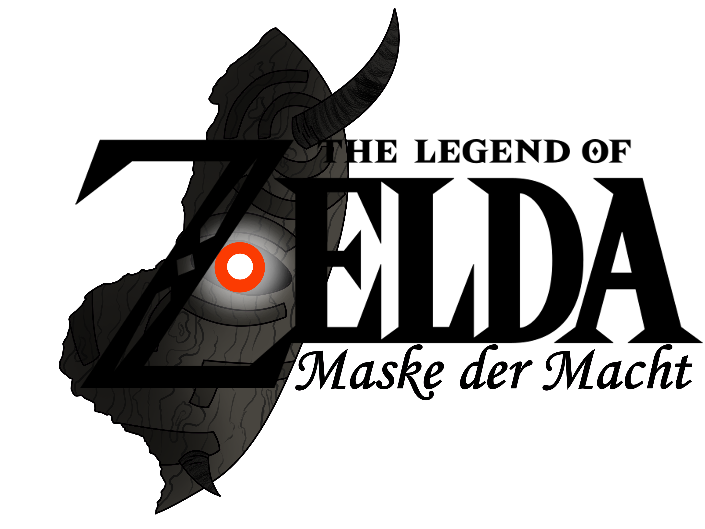

The Legend of Zelda: Maske der Macht

Worum geht's bei dem Projekt?
The Legend of Zelda: Maske der Macht ist ein Fanfilm und noch sehr früh in der Konzept/Skript Phase. Der Film handelt von Link, einem 17 jährigen Studenten aus Tokyo, der in Shizuoka aufwuchs. Plötzlich taucht auf seinem Balkon Prinzessin Zelda auf und will ihm erklären, dass er dazu bestimmt ist Hyrule vor Tatsumi mit der Maske der Macht zu besiegen. Also geht Link mit Zelda nach Hyrule und der Student muss alles lernen, was es braucht um ein Krieger zu sein um das Königreich zu retten.

Poster Design Nr.1
Wer ist an dem Projekt beteiligt?
Unser Team bei diesem Projekt ist zwar überschaubar, aber wir versuchen noch zu expandieren.
| Aufgabe | Name |
|---|---|
| Regie | Michael Hinterlechner |
| Head of Story/Skript | Michael Pill |
| Story | David Daxecker, Michael Hinterlechner |
| Charakter Design | Michael Hinterlechner, Niko Juhn |
| Storyboard | Michael Hinterlechner |
| Animation | Michael Hinterlechner |
| Cleanup | Michael Hinterlechner |
| Coloring | Michael Pill, Michael Hinterlechner |
| Compositing | Michael Hinterlechner |
| Musik | Komposition: Michael Hinterlechner, Koji Kondo |
| Performance: TMK Geretsberg | |
| Sound Design | Michael Hinterlechner |
Wie sieht's mit den Stimmen aus?
| Rolle | Synchronschauspieler |
|---|---|
| Link | Michael Hinterlechner |
| Tatsumi | Niko Juhn (nicht 100% sicher) |
| Weitere Stimmen werden noch gesucht. | |